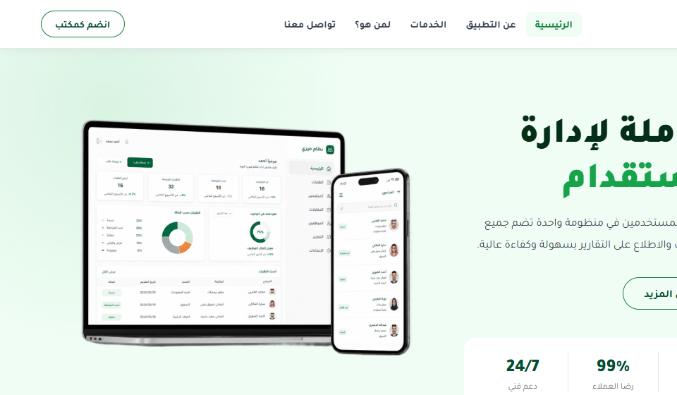

Mery Multi-Vendor Recruitment Platform
A complete SaaS recruitment ecosystem connecting 500+ licensed recruitment offices with individuals across Saudi Arabia — CV library, request management, real-time tracking, and Nafath (نفاذ) identity verification. Delivered as a Laravel multi-vendor backend + Flutter iOS & Android app.

Project Overview
Mery (ميري) is a Saudi multi-vendor SaaS platform bridging licensed domestic recruitment offices with individuals seeking household or administrative workers. Each office gets its own fully isolated management environment within a shared infrastructure — a true multi-tenant system at scale.
Delivered as two products: (1) Laravel multi-vendor backend for offices — requests, CVs, stages, documents, finance, team; and (2) Flutter mobile app for individuals and office staff. Both authenticate via Nafath (Saudi national identity) — real-identity verified, zero friction.
Who Is It For?
For Individuals (Customers)
- Submit recruitment requests electronically
- Browse CV library — filter by nationality, skills, experience
- Track request status step-by-step in real time
- Receive instant push notifications at every stage
- Authenticate securely via Nafath — no passwords
For Recruitment Offices
- Manage all requests and documents in one workspace
- Add and manage CV library — worker profiles with photos
- Track each request through all processing stages
- Team management with role-based permissions per staff
- Detailed performance reports and client analytics
System Components
Each of 500+ offices gets its own isolated workspace — request pipeline, CV library, client database, finance, team roles, dashboards. Offices fully isolated with row-level data scoping.
Single Flutter codebase — two distinct app experiences: individuals (browse CVs, requests, tracking) and office staff (process, update stages, notify on the go). App Store + Google Play.
Offices upload worker CV profiles — nationality, skills, experience, photo, availability. Individuals search and filter by nationality, job type, experience — attach preferred CVs to their request.
Auth via Nafath — users verify their national ID card via QR code or Nafath app notification, returning a secure JWT. No username, no password, no unverified accounts — every user is a verified Saudi resident.
Request Lifecycle — 5 Steps
Mobile App — Store Links
The Mery Flutter app is live on both stores — single codebase, fully Arabic-first RTL for individual users and office staff.
Key Features
Project Highlights
Technical Challenges
Strong data isolation between competing offices sharing one database — achieved via row-level security with global query scopes in Laravel. Every query auto-scoped by tenant ID, preventing cross-tenant exposure even under application-level bugs. New office onboarding generates isolated config with zero downtime.
Nafath auth is async — user initiates on Mery, approves on separate Nafath gov app, Nafath callbacks Mery with verification token. Implemented via Flutter deep linking: app listens for Nafath callback URL, processes returned token, resumes session — all within 60-second timeout with graceful handling for expired/rejected verifications.
App serves two very different user types from one binary — detected from the Nafath JWT, conditionally rendering completely different navigation trees and feature sets. Shared only common components: notifications, auth, API clients. Single codebase cuts maintenance cost by 50%.